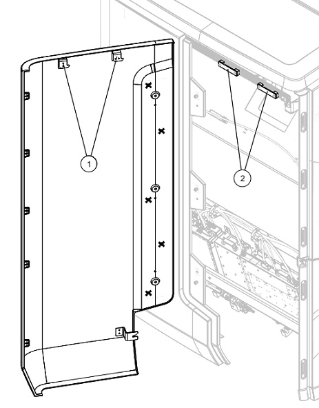

Installs the front service access panel onto the magnet enclosure. This panel covers the components mounted on the left-hand side of the magnet.
Prerequisites
Personnel requirements
Required persons
Preliminary requirements
Procedure
Finalization
1
-
5 minutes
-
Tools and test equipment
Item
Quantity
Part number
Manufacturer
Nonmagnetic Titanium Service Tool Kit, Small Set
1
5113258
-
Safety
Before working in any GE HealthCare MR suite or doing any GE HealthCare service procedure, you must:
Have read and understood all hazard conditions and safety requirements in the latest revision of the GE HealthCare MR Service Safety Manual (5452735).
Have successfully completed all relevant GE HealthCare Environmental Health and Safety (EHS) courses (or for non-GE HealthCare employees, equivalent workplace training courses).
Comply with all site-specific training and workplace safety requirements.
If you have any safety concerns at any time, do not begin work or immediately stop work and move to a safe location. Immediately contact your supervisor or site safety officer for instructions on how to proceed.
Procedure
Lower the front service access panel (8600600-600) into position on the magnet enclosure. Make sure the tabs on the top of the panel engage the slots on the upper service access panel.
Figure 1. Front service access panel alignment

1
Tabs
2
Slots
Slide the access panel rearward.
Install three M10 x 25 Socket Head Cap Screws securing the front service access panel to the rear service access panel. If the screw holes and cover holes do not align, insert a screwdriver or similar tool in the alignment tool holes and adjust the cover while installing the screws.
Note A tool, typically a screwdriver, can be inserted into the indicated alignment tool holes as required to align the front and rear service access panel screw holes.